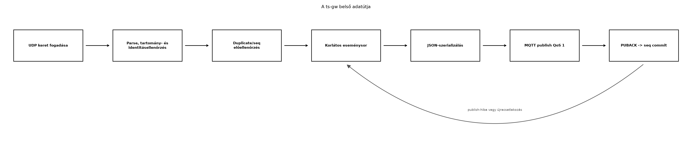

A TerraSense architektúrájában a
ts-node szenzorcsomópont önmagában nem mindig képes
közvetlenül MQTT-t küldeni a brokernek. Valós hardveren gyakran BLE
GATT-értesítéssel adja át az adatot, a szimulációs laborokban pedig egy
egyszerű UDP-datagrammal. A ts-gw az a Linux-gateway, amely
ezt a heterogén eszközoldali forgalmat egységes MQTT-üzenetté alakítja a
felhő felé. Ez a protokollfordítás nem csupán szintaktikai konverzió: a
gateway ellenőrzi és normalizálja a mezőneveket, kezeli az eszköz- és
gateway-időbélyeg különbségét, elvégzi az alapvető duplikátum- és
sorrendellenőrzést, majd a i028-ban már
bevezetett terrasense/<site>/<node>/telemetry
topicra publikál. Az alábbiakban egy adapter-alapú, RAII-t használó
C++17 gatewayt építünk fel, amelyet a későbbi alfejezetek a store-and-forward, az üzemeltetés, a helyi
feldolgozás, a biztonság és a záróprojekt során bővítenek.
A fejezet célja, hogy a bemásolt projekt ne egy hiányos váz legyen:
minden hivatkozott .cpp fájl teljes forrással szerepel, a
CMake-konfiguráció a ténylegesen használt Paho C++ 1.3.2 könyvtárat
linkeli, és a UDP-adapter egyszerre több site/node forgalmát képes
fogadni. A hálózati és brokeres végigfuttatás a labor feladata; a
fejezet a statikusan ellenőrizhető részeket külön jelöli.
Definíció (input adapter). Az input adapter a
gateway bemeneti protokollját elszigetelő, lecserélhető
programkomponens. Feladata, hogy egy adott forrásból (UDP, BLE GATT,
soros port) nyers kereteket fogadjon, és az egységes belépési pontnak
átadja. A többi komponens csak az adapter által kikényszerített
absztrakciót ismeri, így a protokollcsere nem érinti a normalizálót vagy
az MQTT-publikálót. Ebben a fejezetben az adapter még nyers
std::string keretet ad át, a normalizálás a fő szál
tulajdona; így az adapter nem függ a telemetria sémájától.
Definíció (normalizált telemetria-minta). A gateway
belső eseménye egy olyan, a nyers protokolltól független adatstruktúra,
amely már a TerraSense telemetria-sémát tükrözi: site,
node_id, boot_id, monoton seq,
UTC eseményidő epoch ms-ban, az időbélyeg forrása és minőségjelzője,
valamint a mért értékek. A mérési mezők
std::optional<double> típusúak: a hiányzó érték JSON
null, nem nulla és nem NaN.
Definíció (korlátos belső eseménysor). A belső eseménysor egy szálbiztos FIFO puffer, amely az egyik szálon érkező normalizált mintákat átadja a publikáló szálnak. A sornak explicit kapacitása és eldobási politikája van: teljes sor esetén a legújabb minta kimarad, a gateway pedig számlálót és naplóbejegyzést készít. A memória így nem nő korlátlanul. Ez a fejezet átmeneti puffere; a tartós, újraindulást is túlélő puffer a store-and-forward alfejezetben kerül a helyére.
A ts-gw belső adatútja az alábbi lépésekből áll:

A folyamatot a következő komponensek valósítják meg:
| Komponens | Felelősség | Megjegyzés |
|---|---|---|
InputAdapter |
absztrakt bemeneti interfész | a UdpInputAdapter ebből származik |
UdpInputAdapter |
UDP-socket, poll, fogadó szál |
200 ms-os poll-timeout, tiszta stop() |
Normalizer |
nyers szöveg -> TelemetrySample |
mezők, tartományok, időbélyeg, seq |
Json |
ellenőrzött JSON-író | escape, véges számok, null |
EventQueue<T> |
korlátos, szálbiztos sor | kapacitás, drop-számláló, visszahelyezés |
MqttPublisher |
MQTT-kapcsolat és publikálás | Paho C++ 1.3.2, QoS 1, PUBACK |
Config |
alapérték, TOML, env, CLI | egy helyen, determinisztikus prioritás |
main |
életciklus, SIGINT, újracsatlakozás | adapter indítása, fő eseményhurok |
A szálak viszonya a következő. Az UDP-adapter saját
std::thread-ben fut, poll()-lal legfeljebb 200
ms-ot vár, majd recvfrom()-mal olvassa a datagramot. A
nyers keretet a FrameHandler adja át a fő szálnak, amely a
Normalizer-rel feldolgozza, majd a korlátos sorba teszi. A
fő szál wait_pop_for() hívással várakozik, szerializál,
publikál, és csak a sikeres PUBACK után commitálja a seq
állapotot. A hálózati küldés idejére az UDP-fogadó nem blokkolódik. A
stop() nem zárja be a socketet a fogadó szál alatt: előbb
running_ = false, majd join(), végül
close(). Ez elkerüli azt a versenyhelyzetet, amikor egy
másik szál egy már lezárt fájlleírót használ.
A C++-os RAII itt nem szlogen, hanem a gateway-hibakezelés alapja. A
socket lezárása a UdpInputAdapter destruktorában, a
MQTT-kliens felszabadítása a MqttPublisher destruktorában,
a szál joinolása a stop() metódusban történik. A
SIGINT és SIGTERM csak egy atomi jelzőt állít;
a tényleges erőforrás-felszabadítás a normál kilépési úton fut le.
A laborban UDP-adaptert használunk, mert a native_sim
ts-node szimulátorból a legegyszerűbben UDP-datagramot küldhetünk. Valós
hardveren a BleInputAdapter ugyanezt az interfészt
implementálhatja a BlueZ D-Bus API-jával: a GATT-értesítések adatait
kell nyers keretté alakítani. A D-Bus-kód bonyolultsága miatt itt csak a
vázat és a döntési szempontot tárgyaljuk; a labor a szimulált
UDP-adapterre épül.
Az alábbi táblázat a gateway implementációjának fő dilemmáit foglalja össze.
| Kérdés | Választás a laborban | Indoklás / alternatíva |
|---|---|---|
| Szálak vagy async I/O | std::thread + poll + blokkoló
Paho-hívás |
egyszerű, átlátható; nagy forgalomnál Boost.Asio vagy
epoll |
| Paho C vagy C++ kliens | Paho C++ 1.3.2, <mqtt/client.h> |
típusos RAII, a QoS 1 tokenje visszaadja a PUBACK eredményét; a C API külön kézi életciklust igényelne |
| JSON-előállítás | saját, ellenőrzött writer | nincs plusz függőség; az escape és a véges szám ellenőrzött. Nagy
sémánál nlohmann/json is választható |
| UDP vagy BLE | UDP a laborban | hardver nélkül BLE-t nem tudunk futtatni; az absztrakció lehetővé teszi a cserét |
| Sor mérete | 1024 elem, drop-newest + számláló | éles rendszerben a tartós spool veszi át a szerepét; a korlátlan sor memóriaszivárgás |
| Hibás device idő | gateway_estimate + estimated_time
jelző |
nem hazudunk device-időt; a backend az időbélyeg forrását is látja |
| Újracsatlakozás | exponenciális backoff 1-8 s | a gateway hosszú életű; a broker kiesése nem állítja le az UDP-fogadást |
A konfiguráció prioritása rögzített: beépített alapérték <
TOML-fájl < TS_GW_* környezeti változó < parancssori
kapcsoló. Ugyanezt a sorrendet használja a systemd-telepítés és a konténer is, ezért a
--config fájl, a környezeti változó és a CLI nem egymást
felülíró, rejtett mechanizmusok. A TOML itt szándékosan csak lapos
kulcs = érték részhalmaz; a szekciós TOML-t a teljes parser
nélkül nem támogatjuk, és az ismeretlen kulcsot hibaüzenettel utasítjuk
el.
Munkakönyvtár és könyvtárstruktúra:
mkdir -p ~/iot-labor/i036/ts-gw/{src,scripts,config}
cd ~/iot-labor/i036/ts-gwts-gw/
├── CMakeLists.txt
├── config/ts-gw.toml
├── scripts/send_udp.py
└── src/
├── Config.h, Config.cpp
├── EventQueue.h
├── InputAdapter.h
├── Json.h
├── MqttPublisher.h, MqttPublisher.cpp
├── Normalizer.h, Normalizer.cpp
├── TelemetryTypes.h
├── UdpInputAdapter.h, UdpInputAdapter.cpp
└── main.cppA labor előfeltétele, hogy a MQTT a gyakorlatban:
Zephyr-kliens és Mosquitto alfejezetben bevezetett
lab-broker Mosquitto fusson a
~/iot-labor/stack/compose.yaml alapján, és a 1883-as porton
hallgasson. A projekt a rögzített laborprofil szerinti Paho C++ 1.3.2-t
használja. Ubuntu 24.04 alatt a fejlesztői csomag neve
libpaho-mqttpp3-dev; a
pkg-config --modversion paho-mqttpp3 parancsnak a rögzített
verziót kell kiírnia. Ha a telepített csomag eltér, a CMake
konfigurálása a verzióellenőrzésnél álljon meg, ne csendben linkeljen
más API-t.
A konfigurációs fájl:
# TerraSense ts-gw – lapos TOML részhalmaz
broker_uri = "tcp://localhost:1883"
client_id = "ts-gw"
udp_bind = "0.0.0.0"
udp_port = 4000
queue_capacity = 1024
qos = 1
log_level = "info"A belső adattípus a TelemetrySample:
#pragma once
#include <cstdint>
#include <optional>
#include <string>
namespace terrasense {
// A gateway belso, protokollfuggetlen esemenye. A meresi mezok optionalisak:
// a kulonbozo szenzorvaltozatok nem feltetlenul mindharom erteket kuldik.
struct TelemetrySample {
int schema_version{1};
std::string site;
std::string node_id;
uint32_t boot_id{0};
uint32_t seq{0};
int64_t ts_epoch_ms{0};
std::string ts_source{"device"};
std::string quality{"good"};
std::optional<double> temperature_c;
std::optional<double> humidity_rh;
std::optional<double> soil_moisture_pct;
};
inline bool has_any_measurement(const TelemetrySample& s) {
return s.temperature_c.has_value() || s.humidity_rh.has_value() ||
s.soil_moisture_pct.has_value();
}
} // namespace terrasenseAz input adapter absztrakciója nyers keretet ad át:
#pragma once
#include <functional>
#include <string>
namespace terrasense {
class InputAdapter {
public:
using FrameHandler = std::function<void(std::string)>;
virtual ~InputAdapter() = default;
virtual bool start(FrameHandler handler, std::string& err) = 0;
virtual void stop() = 0;
};
} // namespace terrasenseA UdpInputAdapter a start()-ban nyitja a
socketet, a run() a háttérszálban poll()-lal
vár, a stop() pedig előbb leállítja és joinolja a szálat,
majd lezárja a socketet. A datagram maximum 2048 bájt; a ennél hosszabb
keretet eldobja és naplózza. A socket SOCK_CLOEXEC, hogy
egy későbbi exec ne örökölje.
#pragma once
#include "InputAdapter.h"
#include <atomic>
#include <cstdint>
#include <string>
#include <thread>
namespace terrasense {
class UdpInputAdapter final : public InputAdapter {
public:
UdpInputAdapter(std::string bind_ip, uint16_t port);
~UdpInputAdapter() override;
bool start(FrameHandler handler, std::string& err) override;
void stop() override;
std::uint64_t loop_ticks() const { return loop_ticks_.load(); }
private:
void run();
int fd_{-1};
std::string bind_ip_;
uint16_t port_;
std::thread worker_;
std::atomic<bool> running_{false};
std::atomic<std::uint64_t> loop_ticks_{0};
FrameHandler handler_;
};
} // namespace terrasense#include "UdpInputAdapter.h"
#include <arpa/inet.h>
#include <cerrno>
#include <cstring>
#include <iostream>
#include <netinet/in.h>
#include <poll.h>
#include <sys/socket.h>
#include <unistd.h>
#include <utility>
namespace terrasense {
UdpInputAdapter::UdpInputAdapter(std::string bind_ip, uint16_t port)
: bind_ip_(std::move(bind_ip)), port_(port) {}
UdpInputAdapter::~UdpInputAdapter() { stop(); }
bool UdpInputAdapter::start(FrameHandler handler, std::string& err) {
if (running_.load()) {
err = "UDP adapter already running";
return false;
}
fd_ = ::socket(AF_INET, SOCK_DGRAM | SOCK_CLOEXEC, 0);
if (fd_ < 0) {
err = std::string("socket: ") + std::strerror(errno);
return false;
}
int yes = 1;
if (::setsockopt(fd_, SOL_SOCKET, SO_REUSEADDR, &yes, sizeof(yes)) < 0) {
err = std::string("setsockopt: ") + std::strerror(errno);
::close(fd_);
fd_ = -1;
return false;
}
sockaddr_in address{};
address.sin_family = AF_INET;
address.sin_port = htons(port_);
if (::inet_pton(AF_INET, bind_ip_.c_str(), &address.sin_addr) != 1) {
err = "invalid IPv4 bind address: " + bind_ip_;
::close(fd_);
fd_ = -1;
return false;
}
if (::bind(fd_, reinterpret_cast<sockaddr*>(&address), sizeof(address)) < 0) {
err = "bind " + bind_ip_ + ":" + std::to_string(port_) + ": " +
std::strerror(errno);
::close(fd_);
fd_ = -1;
return false;
}
handler_ = std::move(handler);
running_.store(true);
worker_ = std::thread(&UdpInputAdapter::run, this);
return true;
}
void UdpInputAdapter::stop() {
running_.store(false);
if (worker_.joinable()) {
worker_.join();
}
if (fd_ >= 0) {
::close(fd_);
fd_ = -1;
}
}
void UdpInputAdapter::run() {
char buffer[2048];
while (running_.load()) {
pollfd descriptor{fd_, POLLIN, 0};
const int ready = ::poll(&descriptor, 1, 200);
loop_ticks_.fetch_add(1);
if (ready < 0) {
if (errno == EINTR) {
continue;
}
std::cerr << "[ERROR] UDP poll: " << std::strerror(errno) << "\n";
break;
}
if (ready == 0) {
continue;
}
sockaddr_storage peer{};
socklen_t peer_length = sizeof(peer);
const ssize_t received =
::recvfrom(fd_, buffer, sizeof(buffer), 0,
reinterpret_cast<sockaddr*>(&peer), &peer_length);
if (received < 0) {
if (errno == EINTR) {
continue;
}
std::cerr << "[ERROR] UDP recvfrom: " << std::strerror(errno) << "\n";
break;
}
if (received == static_cast<ssize_t>(sizeof(buffer))) {
std::cerr << "[WARN] oversized UDP datagram discarded\n";
continue;
}
if (handler_) {
handler_(std::string(buffer, static_cast<std::size_t>(received)));
}
}
}
} // namespace terrasenseA Normalizer a
site=gh1;node=n001;boot=7;seq=42;ts=...;T=23.4;RH=61.2;SM=34
formátumú keretet alakítja TelemetrySample-lé. A számokat
std::from_chars konvertálja, így a tizedesjel nem függ a
locale-tól. Az azonosítók [A-Za-z0-9][A-Za-z0-9_-]{0,31}
alakúak; az idézőjelet vagy pontosvesszőt tartalmazó azonosítót a
gateway elutasítja, nem próbálja „megtisztítani”. A hiányzó vagy
érvénytelen ts, illetve a clock=0 esetén a
gateway gateway_estimate időbélyeget és
estimated_time minőségjelzőt állít be. A mérési
tartományok: hőmérséklet -40..85 °C, páratartalom 0..100 %RH,
talajnedvesség 0..100 térfogati %. A seq állapot kulcsa a
(site, node_id, boot_id) hármas; a commit csak a sikeres
publikálás után történik.
#pragma once
#include "TelemetryTypes.h"
#include <cstdint>
#include <map>
#include <mutex>
#include <string>
namespace terrasense {
class Normalizer {
public:
bool parse(const std::string& raw, TelemetrySample& out,
std::string& err) const;
bool is_duplicate(const TelemetrySample& sample, std::string& err) const;
void commit_seq(const TelemetrySample& sample);
void reset();
private:
struct SeqState {
uint32_t last_seq{0};
bool have_last{false};
};
static std::string key_for(const TelemetrySample& sample);
mutable std::mutex mutex_;
std::map<std::string, SeqState> seq_state_;
};
} // namespace terrasense#include "Normalizer.h"
#include <charconv>
#include <chrono>
#include <cmath>
#include <cstddef>
#include <string_view>
#include <vector>
namespace terrasense {
namespace {
std::string trim(std::string_view value) {
const auto first = value.find_first_not_of(" \t\r\n");
if (first == std::string_view::npos) {
return {};
}
const auto last = value.find_last_not_of(" \t\r\n");
return std::string(value.substr(first, last - first + 1));
}
bool valid_identifier(std::string_view value) {
if (value.empty() || value.size() > 32) {
return false;
}
for (std::size_t i = 0; i < value.size(); ++i) {
const char c = value[i];
const bool alnum = (c >= 'a' && c <= 'z') || (c >= 'A' && c <= 'Z') ||
(c >= '0' && c <= '9');
if (i == 0 && !alnum) {
return false;
}
if (!alnum && c != '_' && c != '-') {
return false;
}
}
return true;
}
template <typename T>
bool parse_integer(std::string_view text, T& value) {
if (text.empty()) {
return false;
}
T result = 0;
const auto parsed = std::from_chars(text.data(), text.data() + text.size(),
result);
if (parsed.ec != std::errc{} || parsed.ptr != text.data() + text.size()) {
return false;
}
value = result;
return true;
}
bool parse_number(std::string_view text, double& value) {
if (text.empty()) {
return false;
}
double result = 0.0;
const auto parsed = std::from_chars(text.data(), text.data() + text.size(),
result);
if (parsed.ec != std::errc{} || parsed.ptr != text.data() + text.size() ||
!std::isfinite(result)) {
return false;
}
value = result;
return true;
}
int64_t now_ms() {
using namespace std::chrono;
return duration_cast<milliseconds>(system_clock::now().time_since_epoch())
.count();
}
// A 2000-01-01 es 2100-01-01 kozotti idobelyeget tekintjuk ertelmesnek.
constexpr int64_t kMinEpochMs = 946684800000LL;
constexpr int64_t kMaxEpochMs = 4102444800000LL;
bool valid_metric_range(const char* name, double value, double low,
double high, std::string& err) {
if (value < low || value > high) {
err = std::string(name) + " out of range [" +
std::to_string(static_cast<int>(low)) + ", " +
std::to_string(static_cast<int>(high)) + "]";
return false;
}
return true;
}
} // namespace
bool Normalizer::parse(const std::string& raw, TelemetrySample& out,
std::string& err) const {
out = TelemetrySample{};
bool have_site = false;
bool have_node = false;
bool have_seq = false;
bool have_metric = false;
bool clock_unsynchronized = false;
bool have_device_ts = false;
int64_t device_ts = 0;
std::size_t begin = 0;
while (begin <= raw.size()) {
const auto end = raw.find(';', begin);
const std::string_view field(
raw.data() + begin,
(end == std::string::npos ? raw.size() : end) - begin);
const std::string token = trim(field);
if (!token.empty()) {
const auto equal = token.find('=');
if (equal == std::string::npos) {
err = "field without '=': " + token;
return false;
}
const std::string key = trim(std::string_view(token).substr(0, equal));
const std::string value = trim(std::string_view(token).substr(equal + 1));
if (key == "site") {
if (!valid_identifier(value)) {
err = "invalid site identifier";
return false;
}
out.site = value;
have_site = true;
} else if (key == "node") {
if (!valid_identifier(value)) {
err = "invalid node identifier";
return false;
}
out.node_id = value;
have_node = true;
} else if (key == "boot") {
if (!parse_integer(value, out.boot_id)) {
err = "invalid boot id";
return false;
}
} else if (key == "seq") {
if (!parse_integer(value, out.seq)) {
err = "invalid seq";
return false;
}
have_seq = true;
} else if (key == "ts") {
if (!parse_integer(value, device_ts) || device_ts < kMinEpochMs ||
device_ts >= kMaxEpochMs) {
have_device_ts = false;
} else {
have_device_ts = true;
}
} else if (key == "clock") {
clock_unsynchronized = (value == "0");
} else if (key == "schema") {
if (!parse_integer(value, out.schema_version) ||
out.schema_version < 1 || out.schema_version > 100) {
err = "invalid schema version";
return false;
}
} else if (key == "T") {
double v = 0.0;
if (!parse_number(value, v)) {
err = "invalid temperature";
return false;
}
if (!valid_metric_range("temperature_c", v, -40.0, 85.0, err)) {
return false;
}
out.temperature_c = v;
have_metric = true;
} else if (key == "RH") {
double v = 0.0;
if (!parse_number(value, v)) {
err = "invalid humidity";
return false;
}
if (!valid_metric_range("humidity_rh", v, 0.0, 100.0, err)) {
return false;
}
out.humidity_rh = v;
have_metric = true;
} else if (key == "SM") {
double v = 0.0;
if (!parse_number(value, v)) {
err = "invalid soil moisture";
return false;
}
if (!valid_metric_range("soil_moisture_pct", v, 0.0, 100.0, err)) {
return false;
}
out.soil_moisture_pct = v;
have_metric = true;
} else {
err = "unknown field: " + key;
return false;
}
}
if (end == std::string::npos) {
break;
}
begin = end + 1;
}
if (!have_site || !have_node || !have_seq || !have_metric) {
err = "missing required field (site, node, seq or measurement)";
return false;
}
if (clock_unsynchronized || !have_device_ts) {
out.ts_epoch_ms = now_ms();
out.ts_source = "gateway_estimate";
out.quality = "estimated_time";
} else {
out.ts_epoch_ms = device_ts;
out.ts_source = "device";
out.quality = "good";
}
return true;
}
std::string Normalizer::key_for(const TelemetrySample& sample) {
return sample.site + "\x1f" + sample.node_id + "\x1f" +
std::to_string(sample.boot_id);
}
bool Normalizer::is_duplicate(const TelemetrySample& sample,
std::string& err) const {
std::lock_guard<std::mutex> lock(mutex_);
const auto it = seq_state_.find(key_for(sample));
if (it == seq_state_.end() || !it->second.have_last) {
return false;
}
if (sample.seq <= it->second.last_seq) {
err = "seq " + std::to_string(sample.seq) + " <= last committed " +
std::to_string(it->second.last_seq);
return true;
}
return false;
}
void Normalizer::commit_seq(const TelemetrySample& sample) {
std::lock_guard<std::mutex> lock(mutex_);
auto& state = seq_state_[key_for(sample)];
if (!state.have_last || sample.seq > state.last_seq) {
state.last_seq = sample.seq;
state.have_last = true;
}
}
void Normalizer::reset() {
std::lock_guard<std::mutex> lock(mutex_);
seq_state_.clear();
}
} // namespace terrasenseA JSON-író nem egyszerű string-összefűzés: a string mezőket
escape-eli, a számokat csak akkor írja ki, ha végesek, a hiányzó mérést
pedig null-ként jeleníti meg. Így egy idézőjelet tartalmazó
naplóüzenet vagy egy NaN nem törli el a JSON szerkezetét. A
to_json() hibát ad vissza, ha valamelyik szám nem véges; a
hívó ilyenkor a mintát eldobja és naplóz.
#pragma once
#include "TelemetryTypes.h"
#include <charconv>
#include <cmath>
#include <cstdio>
#include <optional>
#include <string>
#include <string_view>
#include <system_error>
namespace terrasense {
// Idezojelet, visszaleptet es vezérlőkaraktert is biztonságosan kezelő
// JSON-string writer. Nem teljes JSON-konyvtar: a gateway sajat, fix semajahoz
// elegendo, de a string hatarolo karaktereket nem hagyja kiszokni.
inline void json_append_escaped(std::string& out, std::string_view text) {
out.push_back('"');
for (const unsigned char c : text) {
switch (c) {
case '"': out += "\\\""; break;
case '\\': out += "\\\\"; break;
case '\b': out += "\\b"; break;
case '\f': out += "\\f"; break;
case '\n': out += "\\n"; break;
case '\r': out += "\\r"; break;
case '\t': out += "\\t"; break;
default:
if (c < 0x20) {
char buf[7];
std::snprintf(buf, sizeof(buf), "\\u%04x", static_cast<unsigned>(c));
out += buf;
} else {
out.push_back(static_cast<char>(c));
}
}
}
out.push_back('"');
}
inline bool json_append_number(std::string& out, double value) {
if (!std::isfinite(value)) {
return false;
}
char buf[32];
const auto result = std::to_chars(buf, buf + sizeof(buf), value,
std::chars_format::general);
if (result.ec != std::errc{}) {
return false;
}
out.append(buf, result.ptr);
return true;
}
inline bool to_json(const TelemetrySample& sample, std::string& out,
std::string& err) {
out.clear();
out.reserve(256);
out += "{\"schema_version\":";
out += std::to_string(sample.schema_version);
out += ",\"site\":";
json_append_escaped(out, sample.site);
out += ",\"node_id\":";
json_append_escaped(out, sample.node_id);
out += ",\"boot_id\":";
out += std::to_string(sample.boot_id);
out += ",\"seq\":";
out += std::to_string(sample.seq);
out += ",\"ts\":";
out += std::to_string(sample.ts_epoch_ms);
out += ",\"ts_source\":";
json_append_escaped(out, sample.ts_source);
out += ",\"quality\":";
json_append_escaped(out, sample.quality);
const auto append_metric = [&](const char* name,
const std::optional<double>& value) {
out += ",\"";
out += name;
out += "\":";
if (!value.has_value()) {
out += "null";
return true;
}
if (!json_append_number(out, *value)) {
err = std::string("non-finite metric: ") + name;
return false;
}
return true;
};
if (!append_metric("temperature_c", sample.temperature_c) ||
!append_metric("humidity_rh", sample.humidity_rh) ||
!append_metric("soil_moisture_pct", sample.soil_moisture_pct)) {
out.clear();
return false;
}
out += "}";
return true;
}
} // namespace terrasenseA korlátos eseménysor:
#pragma once
#include <chrono>
#include <condition_variable>
#include <cstddef>
#include <cstdint>
#include <deque>
#include <mutex>
namespace terrasense {
// Korlatos, szalbiztos FIFO. A producer nem blokkol: ha a sor megtelt, az uj
// elemet eldobja es szamolja. A sikertelen publish utani visszahelyezes a sor
// elejere kerul; ehhez szukseg eseten a legfiatalabb elem esik ki, hogy a mar
// megkezdett, regi mintat ne veszitsuk el.
template <typename T>
class EventQueue {
public:
explicit EventQueue(std::size_t capacity) : capacity_(capacity) {}
bool try_push(const T& item) {
std::lock_guard<std::mutex> lock(mutex_);
if (closed_ || queue_.size() >= capacity_) {
++dropped_;
return false;
}
queue_.push_back(item);
cv_.notify_one();
return true;
}
void requeue_front(const T& item) {
std::lock_guard<std::mutex> lock(mutex_);
if (closed_) {
return;
}
if (queue_.size() >= capacity_) {
queue_.pop_back();
++dropped_;
}
queue_.push_front(item);
cv_.notify_one();
}
bool wait_pop_for(T& item, std::chrono::milliseconds timeout) {
std::unique_lock<std::mutex> lock(mutex_);
if (!cv_.wait_for(lock, timeout,
[this] { return closed_ || !queue_.empty(); })) {
return false;
}
if (queue_.empty()) {
return false;
}
item = queue_.front();
queue_.pop_front();
return true;
}
void close() {
std::lock_guard<std::mutex> lock(mutex_);
closed_ = true;
cv_.notify_all();
}
std::size_t size() const {
std::lock_guard<std::mutex> lock(mutex_);
return queue_.size();
}
std::uint64_t dropped() const {
std::lock_guard<std::mutex> lock(mutex_);
return dropped_;
}
private:
mutable std::mutex mutex_;
std::condition_variable cv_;
std::deque<T> queue_;
std::size_t capacity_;
std::uint64_t dropped_{0};
bool closed_{false};
};
} // namespace terrasenseA MqttPublisher a Paho C++ szinkron kliense felett ad
QoS 1 publikálást. A publish() nem csak azt nézi, hogy a
hívás nem dobott kivételt: megvárja a tokent, és ellenőrzi a
visszatérési kódot. QoS 1 esetén a token sikeres befejezése a broker
PUBACK-je. A connect() és publish() 5, illetve
10 másodperces korlátot használ, hogy egy félig nyitott TCP-kapcsolat ne
blokkolja örökre a fő szálat.
#pragma once
#include <mqtt/client.h>
#include <string>
namespace terrasense {
class MqttPublisher {
public:
MqttPublisher(std::string broker_uri, std::string client_id);
~MqttPublisher();
MqttPublisher(const MqttPublisher&) = delete;
MqttPublisher& operator=(const MqttPublisher&) = delete;
bool connect(std::string& err);
void disconnect();
bool publish(const std::string& topic, const std::string& payload, int qos,
std::string& err);
bool is_connected() const;
private:
mqtt::client client_;
std::string broker_uri_;
std::string client_id_;
};
} // namespace terrasense#include "MqttPublisher.h"
#include <chrono>
#include <mqtt/connect_options.h>
#include <mqtt/exception.h>
#include <mqtt/message.h>
#include <mqtt/token.h>
#include <utility>
namespace terrasense {
MqttPublisher::MqttPublisher(std::string broker_uri, std::string client_id)
: client_(broker_uri, client_id),
broker_uri_(std::move(broker_uri)),
client_id_(std::move(client_id)) {}
MqttPublisher::~MqttPublisher() { disconnect(); }
bool MqttPublisher::connect(std::string& err) {
if (client_.is_connected()) {
return true;
}
try {
mqtt::connect_options options;
options.set_clean_session(true);
options.set_keep_alive_interval(20);
options.set_connect_timeout(5);
auto token = client_.connect(options);
if (!token->wait_for_completion(std::chrono::seconds(5))) {
err = "MQTT connect timeout";
return false;
}
if (token->get_return_code() != 0) {
err = "MQTT connect refused, rc=" +
std::to_string(token->get_return_code());
return false;
}
return client_.is_connected();
} catch (const mqtt::exception& e) {
err = std::string("MQTT connect: ") + e.what();
return false;
}
}
void MqttPublisher::disconnect() {
if (!client_.is_connected()) {
return;
}
try {
auto token = client_.disconnect();
if (token) {
token->wait_for_completion(std::chrono::seconds(2));
}
} catch (const mqtt::exception&) {
// A leallitas nem dobhat: a hivo mar a hibautet naplozza.
}
}
bool MqttPublisher::publish(const std::string& topic,
const std::string& payload, int qos,
std::string& err) {
if (!client_.is_connected()) {
err = "MQTT not connected";
return false;
}
try {
auto message = mqtt::make_message(topic, payload);
message->set_qos(qos);
auto token = client_.publish(message);
if (!token->wait_for_completion(std::chrono::seconds(10))) {
err = "MQTT publish timeout (no PUBACK)";
return false;
}
if (token->get_return_code() != 0) {
err = "MQTT publish failed, rc=" +
std::to_string(token->get_return_code());
return false;
}
return true;
} catch (const mqtt::exception& e) {
err = std::string("MQTT publish: ") + e.what();
return false;
}
}
bool MqttPublisher::is_connected() const { return client_.is_connected(); }
} // namespace terrasenseA Config a négy konfigurációs forrást egy helyen,
dokumentált sorrendben dolgozza fel. A TOML-parser lapos kulcs-érték
párokat, teljes soros # kommentet és idézőjeles stringet
ismer; az ismeretlen kulcsot hibaként jelzi. A környezeti változók nevei
TS_GW_MQTT_BROKER, TS_GW_CLIENT_ID,
TS_GW_UDP_BIND, TS_GW_UDP_PORT,
TS_GW_QUEUE_CAPACITY, TS_GW_QOS,
TS_GW_LOG_LEVEL, TS_GW_SPOOL_PATH,
TS_GW_MAX_SPOOL_RECORDS. A spool_path és
max_spool_records mezőt ebben a fejezetben még nem
használjuk, de a store-and-forward és az üzemeltetés ugyanezt a konfigurációt viszi
tovább.
#pragma once
#include <cstddef>
#include <cstdint>
#include <string>
namespace terrasense {
struct Config {
std::string broker_uri{"tcp://localhost:1883"};
std::string client_id{"ts-gw"};
std::string udp_bind{"0.0.0.0"};
uint16_t udp_port{4000};
std::size_t queue_capacity{1024};
int qos{1};
std::string log_level{"info"};
std::string spool_path{"./var/spool.db"};
std::size_t max_spool_records{100000};
};
// A konfiguracio forrasa: beepitett alap < TOML-fajl < kornyezeti valtozo <
// parancssor. A fuggveny false-t ad vissza hiba eseten, a hiba szoveget az
// err tartalmazza. A --help eseten a help_requested igaz lesz.
bool load_config(int argc, char** argv, Config& cfg, bool& help_requested,
std::string& err);
void print_usage(const char* program);
} // namespace terrasense#include "Config.h"
#include <cstdlib>
#include <fstream>
#include <iostream>
#include <limits>
#include <sstream>
#include <string_view>
#include <vector>
namespace terrasense {
namespace {
std::string trim(std::string_view value) {
const auto first = value.find_first_not_of(" \t\r\n");
if (first == std::string_view::npos) {
return {};
}
const auto last = value.find_last_not_of(" \t\r\n");
return std::string(value.substr(first, last - first + 1));
}
bool parse_unsigned(std::string_view text, std::size_t& value) {
if (text.empty()) {
return false;
}
std::size_t result = 0;
for (const char c : text) {
if (c < '0' || c > '9') {
return false;
}
const auto digit = static_cast<std::size_t>(c - '0');
if (result > (std::numeric_limits<std::size_t>::max() - digit) / 10) {
return false;
}
result = result * 10 + digit;
}
value = result;
return true;
}
bool parse_string(std::string_view text, std::string& value) {
const std::string t = trim(text);
if (t.size() < 2 || t.front() != '"' || t.back() != '"') {
return false;
}
value = t.substr(1, t.size() - 2);
return value.find('"') == std::string::npos;
}
bool apply_value(Config& cfg, const std::string& key, const std::string& raw,
std::string& err) {
std::size_t number = 0;
if (key == "broker_uri" || key == "client_id" || key == "udp_bind" ||
key == "log_level" || key == "spool_path") {
std::string value;
if (!parse_string(raw, value)) {
err = "string value expected for key " + key;
return false;
}
if (key == "broker_uri") cfg.broker_uri = value;
if (key == "client_id") cfg.client_id = value;
if (key == "udp_bind") cfg.udp_bind = value;
if (key == "log_level") cfg.log_level = value;
if (key == "spool_path") cfg.spool_path = value;
return true;
}
if (!parse_unsigned(trim(raw), number)) {
err = "non-negative integer expected for key " + key;
return false;
}
if (key == "udp_port") {
if (number == 0 || number > 65535) {
err = "udp_port out of range";
return false;
}
cfg.udp_port = static_cast<uint16_t>(number);
} else if (key == "queue_capacity") {
if (number == 0) {
err = "queue_capacity must be positive";
return false;
}
cfg.queue_capacity = number;
} else if (key == "qos") {
if (number > 1) {
err = "qos must be 0 or 1 in this gateway";
return false;
}
cfg.qos = static_cast<int>(number);
} else if (key == "max_spool_records") {
if (number == 0) {
err = "max_spool_records must be positive";
return false;
}
cfg.max_spool_records = number;
} else {
err = "unknown configuration key: " + key;
return false;
}
return true;
}
bool load_file(const std::string& path, Config& cfg, std::string& err) {
std::ifstream input(path);
if (!input) {
err = "cannot open config file: " + path;
return false;
}
std::string line;
std::size_t line_no = 0;
while (std::getline(input, line)) {
++line_no;
const std::string t = trim(line);
if (t.empty() || t.front() == '#') {
continue;
}
const auto equal = t.find('=');
if (equal == std::string::npos) {
err = path + ":" + std::to_string(line_no) + ": key = value expected";
return false;
}
const std::string key = trim(t.substr(0, equal));
std::string value = trim(t.substr(equal + 1));
// A mintaban csak a teljes soros kommentet tamogatjuk, a " karakter
// utan allo # nem komment. Ez szandekosan egyszeru TOML-reszhalmaz.
if (value.size() >= 2 && value.front() == '"') {
const auto closing = value.find('"', 1);
if (closing == std::string::npos) {
err = path + ":" + std::to_string(line_no) + ": unterminated string";
return false;
}
const std::string after = trim(value.substr(closing + 1));
if (!after.empty() && after.front() != '#') {
err = path + ":" + std::to_string(line_no) + ": trailing text";
return false;
}
value = value.substr(0, closing + 1);
} else {
const auto hash = value.find('#');
if (hash != std::string::npos) {
value = trim(value.substr(0, hash));
}
}
if (!apply_value(cfg, key, value, err)) {
err = path + ":" + std::to_string(line_no) + ": " + err;
return false;
}
}
return true;
}
bool apply_env(Config& cfg, std::string& err) {
struct EnvKey { const char* name; const char* key; };
const EnvKey keys[] = {
{"TS_GW_MQTT_BROKER", "broker_uri"},
{"TS_GW_CLIENT_ID", "client_id"},
{"TS_GW_UDP_BIND", "udp_bind"},
{"TS_GW_UDP_PORT", "udp_port"},
{"TS_GW_QUEUE_CAPACITY", "queue_capacity"},
{"TS_GW_QOS", "qos"},
{"TS_GW_LOG_LEVEL", "log_level"},
{"TS_GW_SPOOL_PATH", "spool_path"},
{"TS_GW_MAX_SPOOL_RECORDS", "max_spool_records"},
};
for (const auto& entry : keys) {
const char* raw = std::getenv(entry.name);
if (raw == nullptr) {
continue;
}
std::string value = raw;
const std::string key = entry.key;
if (key == "broker_uri" || key == "client_id" || key == "udp_bind" ||
key == "log_level" || key == "spool_path") {
value = "\"" + value + "\"";
}
if (!apply_value(cfg, key, value, err)) {
err = std::string(entry.name) + ": " + err;
return false;
}
}
return true;
}
} // namespace
bool load_config(int argc, char** argv, Config& cfg, bool& help_requested,
std::string& err) {
help_requested = false;
std::string config_path;
std::vector<std::pair<std::string, std::string>> overrides;
for (int i = 1; i < argc; ++i) {
const std::string arg = argv[i];
if (arg == "--help" || arg == "-h") {
help_requested = true;
return true;
}
if (arg.rfind("--", 0) != 0) {
err = "unexpected positional argument: " + arg;
return false;
}
if (i + 1 >= argc) {
err = "missing value for " + arg;
return false;
}
const std::string value = argv[++i];
if (arg == "--config") {
config_path = value;
} else if (arg == "--broker") {
overrides.emplace_back("broker_uri", value);
} else if (arg == "--client-id") {
overrides.emplace_back("client_id", value);
} else if (arg == "--udp-bind") {
overrides.emplace_back("udp_bind", value);
} else if (arg == "--udp-port") {
overrides.emplace_back("udp_port", value);
} else if (arg == "--queue-capacity") {
overrides.emplace_back("queue_capacity", value);
} else if (arg == "--qos") {
overrides.emplace_back("qos", value);
} else if (arg == "--log-level") {
overrides.emplace_back("log_level", value);
} else if (arg == "--spool-path") {
overrides.emplace_back("spool_path", value);
} else if (arg == "--max-spool-records") {
overrides.emplace_back("max_spool_records", value);
} else {
err = "unknown option: " + arg;
return false;
}
}
if (!config_path.empty() && !load_file(config_path, cfg, err)) {
return false;
}
if (!apply_env(cfg, err)) {
return false;
}
for (const auto& override : overrides) {
std::string value = override.second;
if (override.first != "broker_uri" && override.first != "client_id" &&
override.first != "udp_bind" && override.first != "log_level" &&
override.first != "spool_path") {
// A parancssori szamokat ugyanazzal a validacioval dolgozzuk fel.
} else {
value = "\"" + value + "\"";
}
if (!apply_value(cfg, override.first, value, err)) {
err = "--" + override.first + ": " + err;
return false;
}
}
return true;
}
void print_usage(const char* program) {
std::cout << "usage: " << program << " [options]\n"
<< " --config <path> TOML subset configuration\n"
<< " --broker <uri> MQTT broker URI\n"
<< " --client-id <id> MQTT client identifier\n"
<< " --udp-bind <ip> UDP bind address (default 0.0.0.0)\n"
<< " --udp-port <port> UDP port (default 4000)\n"
<< " --queue-capacity <n> bounded queue capacity\n"
<< " --qos <0|1> MQTT publish QoS\n"
<< " --log-level <level> debug, info, warn or error\n"
<< " --spool-path <path> durable spool path (i037)\n"
<< " --max-spool-records <n> spool retention limit (i037)\n";
}
} // namespace terrasenseA main() összerakja a komponenseket. Induláskor a broker
elérhetetlensége nem végzetes hiba: a gateway tovább fogad, a minták a
korlátos átmeneti sorba kerülnek, és a fő ciklus backoffal próbál
újracsatlakozni. Sikertelen publish esetén a minta visszakerül a sor
elejére; ha a sor megtelt, a legfiatalabb minta esik ki, és a
drop-számláló nő. A seq commit csak sikeres PUBACK után
történik, ezért egy sikertelen publish nem „foglalja le” a sorszámot. Ez
a viselkedés még nem tartós: a folyamat leállásakor a sor tartalma
elveszik, ezt oldja meg a következő alfejezet spoolja.
#include "Config.h"
#include "EventQueue.h"
#include "Json.h"
#include "MqttPublisher.h"
#include "Normalizer.h"
#include "TelemetryTypes.h"
#include "UdpInputAdapter.h"
#include <algorithm>
#include <atomic>
#include <chrono>
#include <csignal>
#include <cstdint>
#include <exception>
#include <iostream>
#include <string>
#include <thread>
using namespace terrasense;
namespace {
std::atomic<bool> g_running{true};
std::atomic<std::uint64_t> g_main_loop_ticks{0};
void handle_signal(int) { g_running.store(false); }
int64_t now_ms() {
using namespace std::chrono;
return duration_cast<milliseconds>(system_clock::now().time_since_epoch())
.count();
}
} // namespace
int main(int argc, char** argv) {
Config config;
bool help = false;
std::string err;
if (!load_config(argc, argv, config, help, err)) {
std::cerr << "[ERROR] configuration: " << err << "\n";
return 2;
}
if (help) {
print_usage(argv[0]);
return 0;
}
std::signal(SIGINT, handle_signal);
std::signal(SIGTERM, handle_signal);
try {
Normalizer normalizer;
EventQueue<TelemetrySample> queue(config.queue_capacity);
MqttPublisher publisher(config.broker_uri, config.client_id);
UdpInputAdapter udp(config.udp_bind, config.udp_port);
std::cout << "[INFO] config broker=" << config.broker_uri
<< " udp=" << config.udp_bind << ":" << config.udp_port
<< " capacity=" << config.queue_capacity << "\n";
if (publisher.connect(err)) {
std::cout << "[INFO] MQTT connected\n";
} else {
std::cout << "[WARN] MQTT unavailable: " << err
<< "; collecting in the transitional queue\n";
}
if (!udp.start(
[&](std::string raw) {
TelemetrySample sample;
std::string parse_error;
if (!normalizer.parse(raw, sample, parse_error)) {
std::cout << "[WARN] rejected frame: " << parse_error << "\n";
return;
}
std::string duplicate_error;
if (normalizer.is_duplicate(sample, duplicate_error)) {
std::cout << "[WARN] duplicate " << sample.site << "/"
<< sample.node_id << " seq=" << sample.seq << ": "
<< duplicate_error << "\n";
return;
}
if (!queue.try_push(sample)) {
std::cout << "[WARN] queue full; dropped " << sample.site
<< "/" << sample.node_id << " seq=" << sample.seq
<< " (dropped=" << queue.dropped() << ")\n";
}
},
err)) {
std::cerr << "[ERROR] UDP adapter: " << err << "\n";
return 1;
}
std::cout << "[INFO] UDP listening on " << config.udp_bind << ":"
<< config.udp_port << "\n";
int backoff_ms = 1000;
int64_t next_reconnect_ms = 0;
while (g_running.load()) {
g_main_loop_ticks.fetch_add(1);
const int64_t now = now_ms();
if (!publisher.is_connected() && now >= next_reconnect_ms) {
if (publisher.connect(err)) {
std::cout << "[INFO] MQTT connected\n";
backoff_ms = 1000;
next_reconnect_ms = 0;
} else {
std::cout << "[WARN] MQTT reconnect failed: " << err << "\n";
next_reconnect_ms = now + backoff_ms;
backoff_ms = std::min(backoff_ms * 2, 8000);
}
}
TelemetrySample sample;
if (!queue.wait_pop_for(sample, std::chrono::milliseconds(200))) {
continue;
}
if (!publisher.is_connected()) {
queue.requeue_front(sample);
continue;
}
std::string duplicate_error;
if (normalizer.is_duplicate(sample, duplicate_error)) {
std::cout << "[WARN] duplicate before publish " << sample.site << "/"
<< sample.node_id << " seq=" << sample.seq << ": "
<< duplicate_error << "\n";
continue;
}
std::string payload;
std::string json_error;
if (!to_json(sample, payload, json_error)) {
std::cout << "[WARN] serialization failed: " << json_error << "\n";
continue;
}
const std::string topic = "terrasense/" + sample.site + "/" +
sample.node_id + "/telemetry";
if (publisher.publish(topic, payload, config.qos, err)) {
normalizer.commit_seq(sample);
std::cout << "[INFO] published " << topic << " seq=" << sample.seq
<< "\n";
} else {
std::cout << "[WARN] publish failed: " << err
<< "; sample kept in the transitional queue\n";
queue.requeue_front(sample);
publisher.disconnect();
next_reconnect_ms = 0;
}
}
udp.stop();
queue.close();
std::cout << "[INFO] gateway stopped; pending=" << queue.size()
<< " dropped=" << queue.dropped() << "\n";
} catch (const std::exception& e) {
std::cerr << "[ERROR] fatal: " << e.what() << "\n";
return 1;
}
return 0;
}A CMake-konfiguráció a Paho C++ 1.3.2 paho-mqttpp3
pkg-config modulját keresi. Ha a modul neve a telepítésben eltér
(például paho-mqttpp3-static), a
pkg_check_modules sort kell javítani, nem a
forráskódot.
cmake_minimum_required(VERSION 3.28)
project(ts-gw CXX)
set(CMAKE_CXX_STANDARD 17)
set(CMAKE_CXX_STANDARD_REQUIRED ON)
set(CMAKE_CXX_EXTENSIONS OFF)
find_package(PkgConfig REQUIRED)
pkg_check_modules(PAHO_MQTTPP3 REQUIRED IMPORTED_TARGET paho-mqttpp3)
find_package(Threads REQUIRED)
add_executable(ts-gw
src/main.cpp
src/Config.cpp
src/Normalizer.cpp
src/UdpInputAdapter.cpp
src/MqttPublisher.cpp)
target_include_directories(ts-gw PRIVATE src)
target_link_libraries(ts-gw PRIVATE
PkgConfig::PAHO_MQTTPP3
Threads::Threads)
target_compile_options(ts-gw PRIVATE -Wall -Wextra -Wpedantic)A labor UDP-küldője egyszerre több mintát, növekvő
seq-vel tud küldeni; a --site,
--node, --boot és --no-ts
kapcsolókkal a többeszközös és a gateway-időbélyeges eset is
gyakorolható:
#!/usr/bin/env python3
"""TerraSense UDP telemetry generator for the i036 gateway lab."""
import argparse
import socket
import time
def main():
parser = argparse.ArgumentParser(description=__doc__)
parser.add_argument("--host", default="127.0.0.1")
parser.add_argument("--port", type=int, default=4000)
parser.add_argument("--site", default="gh1")
parser.add_argument("--node", default="n001")
parser.add_argument("--boot", type=int, default=7)
parser.add_argument("--seq", type=int, default=42)
parser.add_argument("--count", type=int, default=1)
parser.add_argument("--interval", type=float, default=1.0)
parser.add_argument("--temp", type=float, default=23.4)
parser.add_argument("--humidity", type=float, default=61.2)
parser.add_argument("--soil", type=float, default=34.0)
parser.add_argument("--no-ts", action="store_true",
help="omit ts so the gateway must estimate it")
args = parser.parse_args()
sock = socket.socket(socket.AF_INET, socket.SOCK_DGRAM)
for index in range(args.count):
seq = args.seq + index
fields = [f"site={args.site}", f"node={args.node}",
f"boot={args.boot}", f"seq={seq}"]
if not args.no_ts:
fields.append(f"ts={int(time.time() * 1000)}")
fields.extend([f"T={args.temp:g}", f"RH={args.humidity:g}",
f"SM={args.soil:g}"])
message = ";".join(fields)
sock.sendto(message.encode("utf-8"), (args.host, args.port))
print(f"sent: {message}")
if index + 1 < args.count:
time.sleep(args.interval)
if __name__ == "__main__":
main()A build és a futtatás:
cd ~/iot-labor/i036/ts-gw
cmake -S . -B build -DCMAKE_BUILD_TYPE=Release
cmake --build build -j"$(nproc)"
./build/ts-gw --config config/ts-gw.tomlEzután egy másik terminálban indítsd el az előfizetőt a labor
brokerében, majd küldj öt mintát növekvő seq-vel:
docker exec -it lab-broker mosquitto_sub -t 'terrasense/#' -v
python3 ~/iot-labor/i036/ts-gw/scripts/send_udp.py --count 5 --seq 42 --interval 0.2A ts-gw termináljának illusztratív kimenete (az
időbélyeg és a PUBACK időzítése futásonként változik):
[INFO] config broker=tcp://localhost:1883 udp=0.0.0.0:4000 capacity=1024
[INFO] MQTT connected
[INFO] UDP listening on 0.0.0.0:4000
[INFO] published terrasense/gh1/n001/telemetry seq=42
[INFO] published terrasense/gh1/n001/telemetry seq=43
[INFO] published terrasense/gh1/n001/telemetry seq=44
[INFO] published terrasense/gh1/n001/telemetry seq=45
[INFO] published terrasense/gh1/n001/telemetry seq=46A mosquitto_sub kimenete egy üzenetre (a ts
értéke futásonként változik):
terrasense/gh1/n001/telemetry {"schema_version":1,"site":"gh1","node_id":"n001","boot_id":7,"seq":42,"ts":1793462683777,"ts_source":"device","quality":"good","temperature_c":23.4,"humidity_rh":61.2,"soil_moisture_pct":34}A fenti ts konkrét érték; a laborban az aktuális epoch
ms jelenik meg. A ts_source és a quality mező
akkor is látható, ha a node nem küldött időbélyeget: ilyenkor
gateway_estimate, illetve estimated_time
szerepel, és a ts a gateway fogadási ideje.
Továbbvitt eredmény. A ts-gw teljes
projektje a ~/iot-labor/i036/ts-gw/ könyvtárban jön létre:
InputAdapter, UdpInputAdapter,
Normalizer, Json, EventQueue,
MqttPublisher, Config és main
komponensekkel. A
terrasense/<site>/<node>/telemetry topicot
mintánként képezzük, a QoS 1 publikálás PUBACK-ig tart, a
seq commit a sikeres publish után történik, a hiányzó mérés
null, a hibás idő pedig minőségjelölt gateway-idő. Erre a
projektre épül a store-and-forward, az üzemeltetés, a helyi
feldolgozás, a biztonságos kapcsolat és a záróprojekt.
A teljes lánc ellenőrzése a fenti mosquitto_sub
előfizetéssel történik. A Paho C++ és a broker nélkül is ellenőrizhető a
normalizáló, a JSON-író, a konfiguráció és a korlátos sor: ezek a
komponensek külső könyvtár nélkül fordíthatók. A fejezet kódjából a
Config, Normalizer, Json és
EventQueue részt a laborban önállóan is le lehet fordítani;
a teljes ts-gw linkeléséhez a Paho C++ fejlesztői csomag
kell.
Az alábbi bemenetek szándékosan hibásak; a gateway a normálizáló hibaüzenetével utasítja el őket, és nem ír ki érvénytelen JSON-t:
python3 scripts/send_udp.py --node 'n"001' --seq 43
# [WARN] rejected frame: invalid node identifier
python3 scripts/send_udp.py --temp nan --seq 44
# [WARN] rejected frame: invalid temperature
python3 scripts/send_udp.py --humidity 101 --seq 45
# [WARN] rejected frame: humidity_rh out of range [0, 100]A --no-ts kapcsolóval küldött minta nem device-időt kap,
hanem gateway_estimate forrást és
estimated_time minőséget. Ez a viselkedés a backend számára
látható; a gateway nem tesz úgy, mintha a node órája szinkronban
lenne.
| Tünet | Lehetséges ok | Javítás |
|---|---|---|
A ts-gw nem indul |
hiányzik a paho-mqttpp3 pkg-config modul |
telepítsd a Paho C++ 1.3.2 fejlesztői csomagját; ellenőrizd a
pkg-config --modversion paho-mqttpp3 kimenetét |
[ERROR] UDP adapter: bind ... |
a 4000-es port foglalt, vagy rossz a bind-cím | ss -lun | grep 4000; állítsd le a foglaló folyamatot,
vagy adj más --udp-port értéket |
| A subscriber nem lát adatot | a topic vagy a broker-cím hibás | ellenőrizd a --broker értékét és a
terrasense/<site>/<node>/telemetry topicot |
A gateway nem ír [INFO] published sort |
az UDP-küldő nem a megfelelő portra küld | ss -lun | grep 4000; a send_udp.py --port
értéke egyezzen a konfigurációval |
[WARN] queue full |
a broker tartósan elérhetetlen, a sor megtelt | ez az átmeneti viselkedés; a tartós megoldás a store-and-forward |
Duplikált seq üzenet |
a normalizáló állapota elveszett újrainduláskor | a következő fejezet tartós spoolja és a backend eseménykulcsa
kezeli; a gateway naplózza a boot_id hiányát |
A hálózati forgalom nyomkövetéséhez a
tcpdump -i lo udp port 4000 parancs használható; ezzel a
bejövő UDP-keret pontos tartalma ellenőrizhető. A seq
commit helyét a naplóban a [INFO] published sor utáni
állapot mutatja: sikertelen publish esetén nincs commit, és a minta
visszakerül a sorba.
A seq ellenőrzés a fogadáskor commitál.
Ha a gateway már a sorba helyezéskor elfogadottnak jelöli a sorszámot,
akkor egy sikertelen MQTT-publish után a minta elveszhet, miközben a
seq állapota már előrelépett. A helyes tranzakciós pont a
sikeres PUBACK (később a tartós spoolba írás). Ezért a
Normalizer külön is_duplicate() és
commit_seq() műveletet ad; a main() csak a
publish sikere után commitál.
A locale-függő std::stod. A magyar vagy
más európai rendszerbeállítás mellett a std::stod("23.4")
értelmezése locale-függő lehet. Az IoT-üzenetekben mindig a pont a
tizedesjel, ezért a normalizáló std::from_chars-t használ,
nem a globális locale-t.
A blokkoló recvfrom() leállítása
socketzárással. Ha a stop() a fogadó szál alatt
zárja le a socketet, a fájlleíró újra felhasználhatóvá válhat, és a
recvfrom() egy másik kapcsolat adatát olvashatja. A helyes
sorrend: running_ = false, join(), majd
close(). A 200 ms-os poll() timeout
biztosítja, hogy a join ne blokkoljon sokáig.
A MQTT-publikálás visszatérési értékének figyelmen kívül
hagyása. A QoS 1 publikálás csak akkor tekinthető a broker
által nyugtázottnak, ha a token befejeződött és a visszatérési kód
sikeres. A Paho C++ publish() önmagában nem garantálja,
hogy a PUBACK megérkezett; a kód ezért
wait_for_completion()-t és
get_return_code()-ot is ellenőriz.
A JSON kézi összefűzése ellenőrizetlen mezőkkel. Ha
a node_id-t vagy egy hibaüzenetet escape nélkül írunk a
JSON-ba, egy idézőjel érvénytelen payloadot okoz. A Json.h
ezért minden stringet escape-el, a számokat pedig csak véges érték
esetén írja ki; az azonosítókat ezen felül a normalizáló is
validálja.
InputAdapter absztrakció, mint ha a main()
közvetlenül az UDP-socketből olvasna, és onnan hívná a
MQTT-publikálót.ts-node BLE GATT-értesítésekkel küldi az adatokat. Írd le
lépésenként, hogyan implementálnál egy BleInputAdapter
osztályt a meglévő InputAdapter interfész alapján, milyen
BlueZ D-Bus objektumokat kellene figyelni.Normalizer-t úgy, hogy a hiányzó seq mezőt ne
pótolja kitalált értékkel, hanem utasítsa el a keretet, és a hibaüzenet
nevezze meg a hiányzó mezőt. Teszteld a send_udp.py egy
olyan változatával, amely kihagyja a seq-et. Indokold,
miért veszélyes a gateway által kitalált seq.ts-gw-t, majd küldj folyamatosan növekvő seq-ű
UDP-kereteket. Állítsd le a lab-broker szolgáltatást, küldj
további mintákat, majd indítsd újra. Figyeld meg a
[WARN] queue full, a drop-számlálót és az újracsatlakozást.
Magyarázd el, miért nem elég ez a viselkedés tartós offline működéshez,
és hogyan oldja meg a store-and-forward.Megoldás. Az adapter leválasztja a gateway
magját a bemeneti protokollról. Ha később BLE-re vagy soros portra
váltunk, csak az adaptert kell kicserélni, a normalizáló és a publikáló
réteg érintetlen marad. Emellett az adapter határozza meg a nyers adatok
fogadásának és leállításának életciklusát, így a main() nem
keveredik a socket-kezelés részleteibe. A nyers keret átadása azt is
lehetővé teszi, hogy a normalizálás és a seq állapot egy
helyen, a fő szálban maradjon.
Megoldás. A BleInputAdapter
indulásakor csatlakozik a BlueZ D-Bus rendszerbuszhoz, majd az
org.bluez Adapter1 interfészen keresztül a
megfelelő adaptert, a Device1 interfészen a
ts-node eszközt, végül a GattCharacteristic1
interfészen a telemetria-karakterisztikát keresi meg. Ezután
StartNotify hívással iratkozik fel az értesítésekre. Minden
értesítés nyers bájtjait std::string keretként adja át a
FrameHandler-nek; a normalizálás ugyanaz marad, mint UDP
esetén. A leállítás StopNotify hívással és a D-Bus
kapcsolat lezárásával történik.
Megoldás. A parse() végén a
kötelező mezők ellenőrzése már tartalmazza a seq-et:
if (!have_site || !have_node || !have_seq || !have_metric).
A hibaüzenet pontosan megnevezi a hiányzó mezőt, például
missing required field (site, node, seq or measurement). A
gateway azért nem pótolhatja a seq-et
last_seq + 1 értékkel, mert a seq az eszköz
eseményazonosítója: egy újraindult node új boot_id-dal újra
1-től számozhat, és a gateway által kitalált érték összeütközhet egy
később érkező valódi eseménnyel. A hiányzó seq
protokollhiba; a helyes válasz az elutasítás és a naplózás, nem a
csendben történő kiegészítés.
Megoldás. A broker leállása után a
publish() hívás MQTT not connected vagy
tokenhiba miatt false-t ad. A minta visszakerül a sor elejére, a
publisher lecsatlakozik, a fő ciklus pedig backoffal újrapróbálkozik. A
sor korlátos: ha a broker hosszabb ideig nem elérhető, a
try_push() a legújabb mintákat eldobja, és a
dropped számláló nő. A folyamat leállásakor a sor tartalma
elveszik, mert az csak memóriában van. Tartós offline működéshez a
mintát a fogadás után azonnal lemezre kell írni, és a PUBACK után
törölni; ezt valósítja meg a store-and-forward
SQLite-spoolja.
A ts-gw egy adapter-alapú, C++17-ben megvalósított
Linux-gateway. Az InputAdapter absztrakció mögött a
UdpInputAdapter fogadja a szimulált ts-node
UDP-kereteit; valós hardveren ugyanezt az interfészt valósíthatja meg
egy BlueZ D-Bus BleInputAdapter. A Normalizer
a nyers site=...;node=...;seq=...;T=... szöveget
TelemetrySample-lé alakítja, ellenőrzi az azonosítókat, a
tartományokat és a seq-et, a hiányzó időbélyeget pedig
minőségjelölt gateway-idővel pótolja. A Json modul
escape-elt, véges számokat tartalmazó payloadot készít. A szálbiztos,
korlátos EventQueue elválasztja a blokkoló fogadást a
publikálástól. A MqttPublisher Paho C++ 1.3.2 klienst
használ QoS 1-gyel, PUBACK-ellenőrzéssel és újracsatlakozással. A build
CMake-kel, a labor teljes lánca UDP-küldéstől a
terrasense/<site>/<node>/telemetry topicig
terjed. Továbbvitt eredmény: a
~/iot-labor/i036/ts-gw/ alatt létrejött teljes projekt a store-and-forward, az üzemeltetés, a helyi
feldolgozás, a biztonság és a záróprojekt alapja.
client, connect_options,
token és message API-ját, valamint a
paho-mqttpp3 pkg-config modul nevét a telepített csomagon
ellenőrizni kell. A fejezet kódja ezekre az API-kra épül, de a
Paho-könyvtár nélküli környezetben csak a saját komponensek fordíthatók
le.mosquitto_sub kapcsolói (pl. -v,
-t) ellenőrizendők a használt verzióban; a labor a
lab-broker konténer klienseit használja.BleInputAdapter vázlatában említett
Adapter1, Device1,
GattCharacteristic1, StartNotify,
StopNotify objektumnevek a hivatalos BlueZ dokumentációban
ellenőrizendők.pkg_check_modules(IMPORTED_TARGET) és a
Threads::Threads használata a rögzített CMake 3.28.3-ban
ellenőrizendő.libpaho-mqttpp3-dev csomagnév és a benne lévő Paho
C++ verzió az Ubuntu 24.04 LTS csomaglistájában ellenőrizendő; a
laborprofil a Paho C++ 1.3.2 verziót rögzíti.